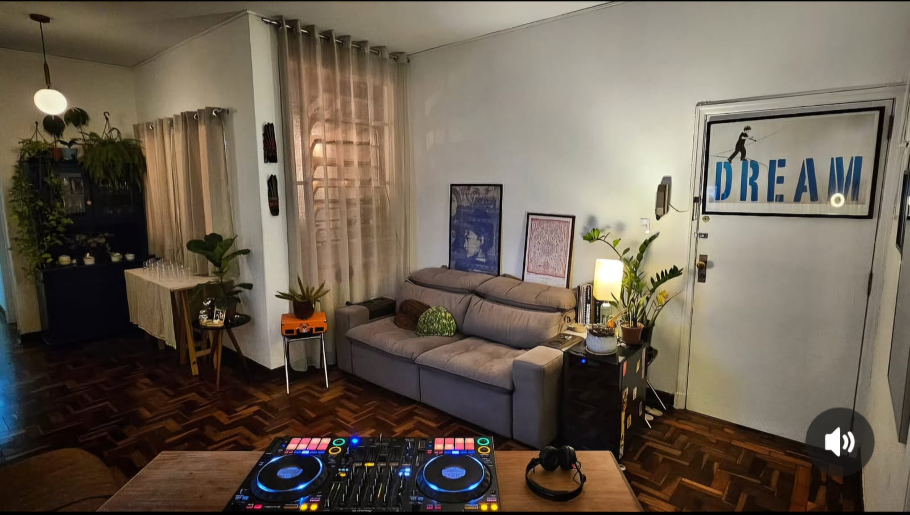
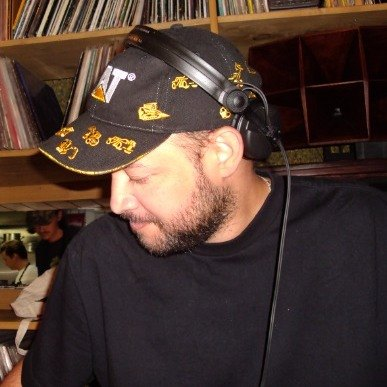
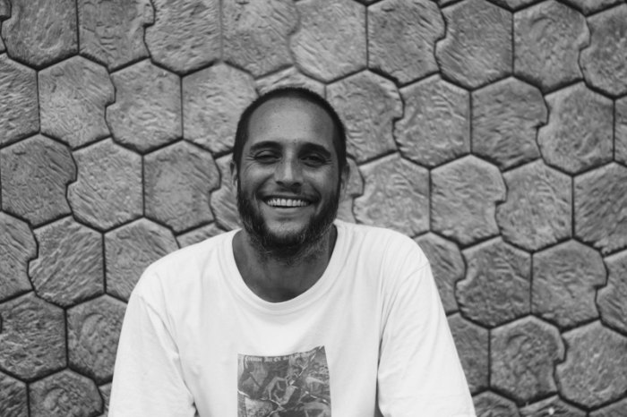
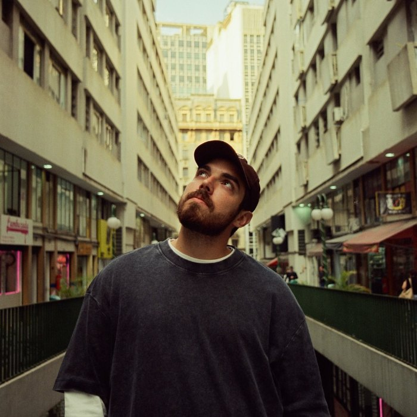
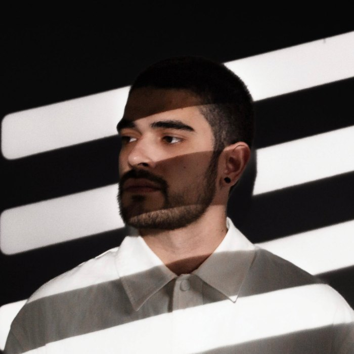
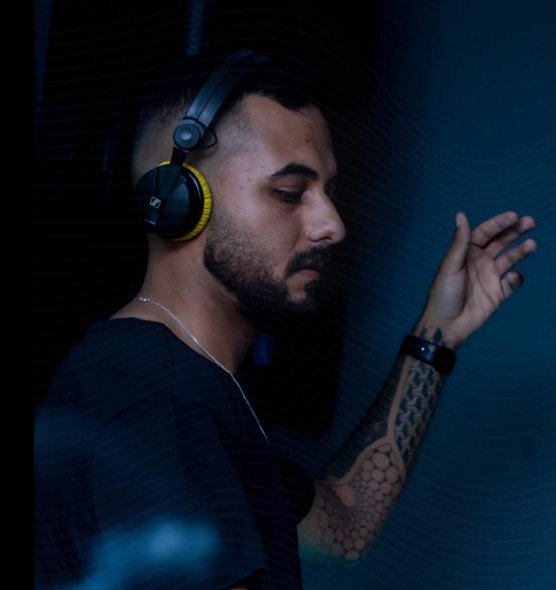
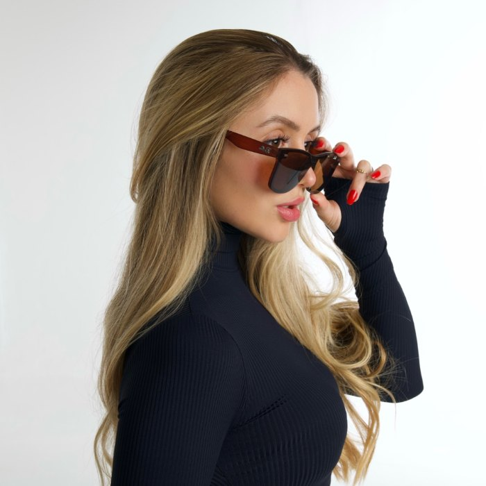
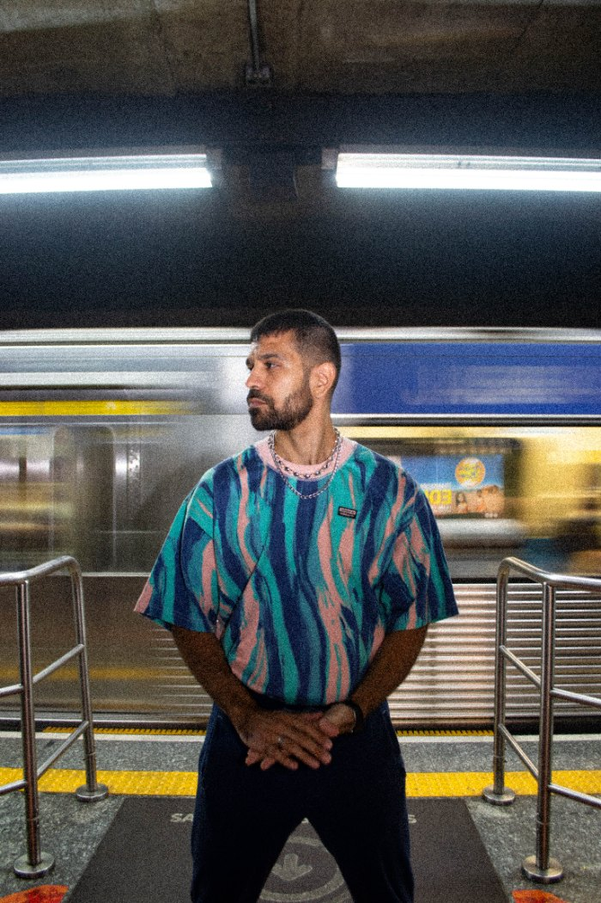

23.012027 · sábado

da sala de casa para o mundo desde jan.2025
#01 · A sala
às vezes mais dança, às vezes mais pista,
às vezes mais dança, às vezes mais pista,
mas sempre aconchegante.
O Sala Club traz a essência da pista de dança para dentro de casa: a energia dos sets ao vivo com a atmosfera íntima de uma sala, sofá, abajur e gente querida em volta.
Começou na própria sala, com o Totsik e convidados de estilos diferentes gravando para o YouTube. Cresceu, ocupou bares de São Paulo sem perder a cara de sala de estar, e hoje é também evento aberto ao público.
fique à vontade, pegue sua bebida e sinta-se em casa.
aqui a vibe é por nossa conta.


- jan 2025a sala de casaonde tudo começou
- jul 2025a sala dos amigosgente querida em volta
- mar 2026Borda BarPinheiros · SP
- jun 2026Major BarVila Buarque · SP
- ago 2026Sala BarPinheiros · SP
- jan 2027FrissonBotafogo · RJ
#02 · Os convidados

Totsik
quem recebe a sala

Lucian Fernandes
House & disco classics
Melon Blush
Set 100% autoral

L_cio
Live set

Seed Selector
House music & volt mix
Dionne
Deep house & house music
Por Um Fio
Brazil core, mandelão & funkhall
Wealstarcks
Brazil core, funk & house music
CHRIZ
Organic & afro house
PJ Sessions
Deep house & house music

MRQZ & Tito Azevedo
Indie dance & melodic house

DEV
House music
Neck
Deep & chill jazzy house

Caio Murilo
Progressive & organic house
Petrone
Melodic & progressive house

Vicky Fonttana
House & tech house

LOVAT x Totsik
Progressive house, indie dance & afro house
LOVAT
Progressive & melodic house

Synce DJs
House, disco & balearic

Carnaval #2
Samba, boogie, bossa nova & house

Carnaval
Funk, mandelão, MTG & funkhall
#03 · O som
 nov 2026
nov 2026Lucian Fernandes
House & disco classics
 out 2026
out 2026Melon Blush
Set 100% autoral
 ago 2026
ago 2026L_cio
Live set
 jul 2026
jul 2026Seed Selector
House music & volt mix
 jun 2026
jun 2026Totsik #7
House music, deep house & indie dance
 mai 2026
mai 2026Dionne
Deep house & house music
 abr 2026
abr 2026Por Um Fio
Brazil core, mandelão & funkhall
 mar 2026
mar 2026Wealstarcks
Brazil core, funk & house music
 fev 2026
fev 2026CHRIZ
Organic & afro house
 jan 2026
jan 2026PJ Sessions
Deep house & house music
 dez 2025
dez 2025MRQZ & Tito Azevedo
Indie dance & melodic house
 nov 2025
nov 2025DEV
House music
 out 2025
out 2025Neck
Deep & chill jazzy house
 set 2025
set 2025Totsik #6
Amapiano, afro beat & afro house
 ago 2025
ago 2025Caio Murilo
Progressive & organic house
 ago 2025
ago 2025Petrone
Melodic & progressive house
 jul 2025
jul 2025Vicky Fonttana
House & tech house
 jul 2025
jul 2025LOVAT x Totsik
Progressive house, indie dance & afro house
 jun 2025
jun 2025LOVAT
Progressive & melodic house
 jun 2025
jun 2025Totsik #5
Afro, caribbean & tropical house
 mai 2025
mai 2025Totsik #4 part. Melon Blush
Afro house, indie dance & breakbeat
 mai 2025
mai 2025Synce DJs
House, disco & balearic
 abr 2025
abr 2025Carnaval #2
Samba, boogie, bossa nova & house
 mar 2025
mar 2025Carnaval
Funk, mandelão, MTG & funkhall
 fev 2025
fev 2025Totsik #3
Indie dance, deep house & breakbeat
 fev 2025
fev 2025Totsik #2
Progressive & afro house brasileiros
 jan 2025
jan 2025Totsik #1
A primeira sala
Nenhum set com esse nome. Tenta outro artista.
últimos 5 sets · playlist inteira no SoundCloud · canal no YouTube
#04 · Próximo encontro
Nenhuma data marcada agora. Quem está no grupo sabe primeiro.
#05 · Vem com a gente
quem tá no grupo
quer receber
quem tá no grupo
sabe primeiro.
Datas, lista e sets novos chegam antes no grupo do WhatsApp.
Entrar no grupoquer receber
a próxima sala?
A gente leva a pista, o sofá e o clima. Conta sobre o seu bar, casa ou evento.
Falar com a gente